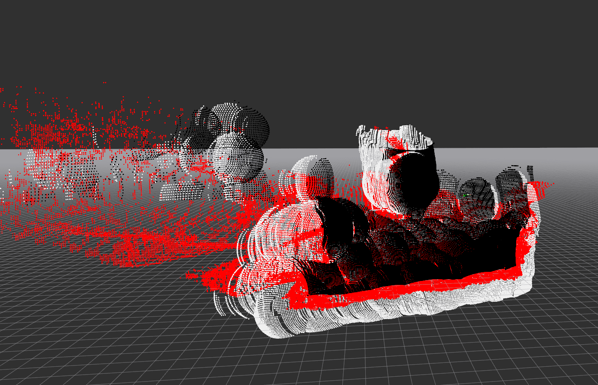
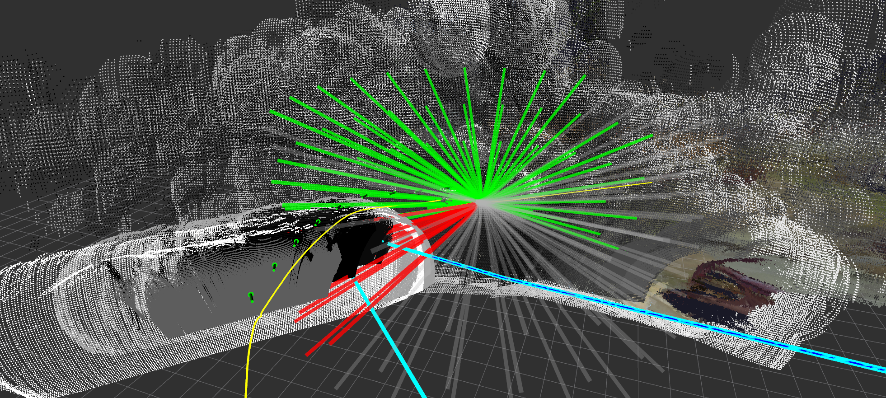

DROAN GL Local Planner¶
Overview¶
DROAN GL is a GPU-accelerated local planner for obstacle avoidance using stereo disparity. It implements the DROAN (Disparity-space Representation for Obstacle Avoidance and Navigation) algorithm with a key improvement: obstacles are expanded using the true sphere shape rather than the camera-facing bounding box approximation used in the original paper, which can be done efficiently on the GPU via OpenGL shaders.

Red = raw disparity, black = foreground expansion, white = background expansion.

Green = collision-free trajectories, red = in collision, grey = entering unseen space. Cyan/blue lines = global plan used for scoring. Green arrows = camera poses stored in the disparity graph.
How It Works¶
1. Disparity Expansion (GPU)¶
On each stereo disparity frame, the GL interface renders the disparity point cloud onto the GPU, then runs expansion shaders that inflate each obstacle point outward by expansion_radius meters as a true sphere. This produces two expanded images:
- Foreground expansion — obstacles pushed toward the camera (conservative near bound)
- Background expansion — obstacles pushed away from the camera (conservative far bound)
2. Disparity Graph¶
Expanded disparity frames are not used one at a time. Instead, the node maintains a rolling disparity graph: a fixed-size list of (pose, foreground expansion, background expansion) tuples representing past observations. A new entry is added to the graph whenever the drone has moved more than graph_distance_threshold meters or rotated more than graph_angle_threshold degrees since the last entry. The graph holds up to graph_nodes entries; the oldest entry is evicted when the list is full.
This graph is the obstacle representation used for collision checking — it gives the planner a wider spatial memory of obstacles than any single frame could provide.
3. Trajectory Evaluation (2.5 Hz)¶
A timer fires at 2.5 Hz to plan the next local trajectory. Planning is relative to the look-ahead point published by the trajectory controller, which is always slightly ahead of the drone's current tracking point.
For each candidate trajectory in the library:
- Every waypoint along the trajectory is projected into the camera frame of each disparity graph node.
- The GPU counts how many graph nodes see the waypoint as seen (obstacle-free), unseen (outside camera FOV), or in collision (inside expanded obstacle).
- A trajectory is marked safe if no waypoint has more collisions than seen observations.
4. Trajectory Scoring¶
Safe trajectories are scored against the global plan:
Lower cost is better. The selected trajectory minimizes lateral deviation from the global plan while maximizing forward progress along it. The best trajectory is published as a TrajectoryXYZVYaw segment to the trajectory controller.
5. Rewind Monitoring¶
Two stuck conditions trigger a rewind (reversal along the past trajectory):
| Condition | Parameter | Rewind duration |
|---|---|---|
| All trajectories in collision for too long | all_in_collision_duration_threshold |
all_in_collision_rewind_duration |
| Robot stationary for too long | stationary_history_duration, stationary_distance_threshold |
stationary_rewind_duration or until stationary_rewind_distance is covered |
Task Executor¶
This node is a task executor: it runs as a ROS 2 action server and is activated on demand via a NavigateTask goal. It does not plan continuously — planning only happens while a goal is active.
Action server: /{robot_name}/tasks/navigate
Type: task_msgs/action/NavigateTask
Cascade¶
Goal parameters¶
| Field | Type | Description |
|---|---|---|
global_plan |
nav_msgs/Path | Path to follow; last pose is the goal |
goal_tolerance_m |
float32 | Distance from goal pose to consider task complete (m) |
Feedback (published ~1 Hz)¶
| Field | Type | Description |
|---|---|---|
status |
string | "navigating" |
distance_to_goal |
float32 | 3D Euclidean distance to goal pose (m) |
current_position |
geometry_msgs/Point | Current tracking point position |
Result¶
| Field | Type | Description |
|---|---|---|
success |
bool | True if goal pose reached within tolerance; false if cancelled or error |
message |
string | "Goal reached", "Cancelled", or "Node shutting down" |
Trajectory controller mode¶
On goal acceptance the node calls the set_trajectory_mode service with mode ADD_SEGMENT, enabling the trajectory controller to extend the trajectory buffer as new segments arrive. On goal completion or cancellation it restores mode TRACK.
CLI test¶
# Navigate to a specific pose (requires a populated global plan topic)
ros2 action send_goal /robot_1/tasks/navigate task_msgs/action/NavigateTask \
'{global_plan: {header: {frame_id: "map"}, poses: [{pose: {position: {x: 10.0, y: 0.0, z: 3.0}}}]}, goal_tolerance_m: 1.0}' \
--feedback
Parameters¶
| Parameter | Default | Description |
|---|---|---|
target_frame |
"map" |
Frame for collision checking and visualization |
look_ahead_frame |
"look_ahead_point_stabilized" |
Frame used as trajectory planning origin |
rewind_info_frame |
"base_link_stabilized" |
Frame for rewind status text marker |
visualize |
true |
Publish expanded disparity pointcloud (high CPU cost when enabled) |
expansion_radius |
— | Sphere radius (m) for obstacle expansion |
seen_radius |
— | Radius (m) around drone treated as observed/safe |
ht |
— | Trajectory horizon (seconds) |
dt |
— | Trajectory time step (seconds) |
downsample_scale |
— | Disparity image downsample factor before GPU processing |
graph_nodes |
— | Max number of disparity observations stored for collision checking |
graph_distance_threshold |
— | Min distance (m) travelled before storing a new observation |
graph_angle_threshold |
— | Min yaw change (degrees) before storing a new observation |
all_in_collision_duration_threshold |
— | Seconds all trajectories must be in collision to trigger rewind |
all_in_collision_rewind_duration |
— | Duration (s) of rewind when all-in-collision condition fires |
stationary_history_duration |
— | Observation window (s) for stationary detection |
stationary_distance_threshold |
— | Max movement (m) over the window to be considered stationary |
stationary_rewind_distance |
— | Target rewind distance (m) for stationary rewind |
stationary_rewind_duration |
— | Max rewind duration (s) for stationary rewind |
Subscriptions¶
| Topic | Type | Description |
|---|---|---|
disparity |
stereo_msgs/DisparityImage | Stereo disparity image |
camera_info |
sensor_msgs/CameraInfo | Camera intrinsics for disparity unprojection |
look_ahead |
airstack_msgs/Odometry | Look-ahead point from trajectory controller (trajectory planning origin) |
tracking_point |
airstack_msgs/Odometry | Current robot tracking point (for stuck detection and goal distance) |
global_plan |
nav_msgs/Path | Global path for trajectory scoring (also set via NavigateTask goal) |
reset_stuck |
std_msgs/Empty | Manually clear stuck detection history |
clear_map |
std_msgs/Empty | Clear stuck detection history (GL map clearing not yet implemented) |
Publications¶
| Topic | Type | Description |
|---|---|---|
trajectory_segment_to_add |
airstack_msgs/TrajectoryXYZVYaw | Best local trajectory segment |
foreground_expanded |
sensor_msgs/Image | GPU-expanded foreground disparity (visualization) |
background_expanded |
sensor_msgs/Image | GPU-expanded background disparity (visualization) |
fg_bg_cloud |
sensor_msgs/PointCloud2 | Expanded obstacle pointcloud (visualization) |
traj_debug |
visualization_msgs/MarkerArray | Trajectory library with collision status coloring |
graph_vis |
visualization_msgs/MarkerArray | Disparity graph camera pose arrows |
local_planner_global_plan_vis |
visualization_msgs/MarkerArray | Global plan segment used for scoring |
stuck |
std_msgs/Bool | True when rewind is active |
rewind_info |
visualization_msgs/MarkerArray | Rewind status text markers |